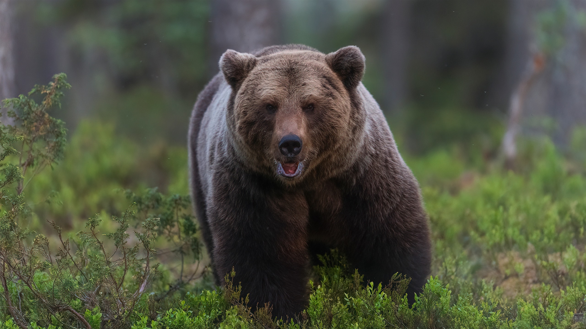
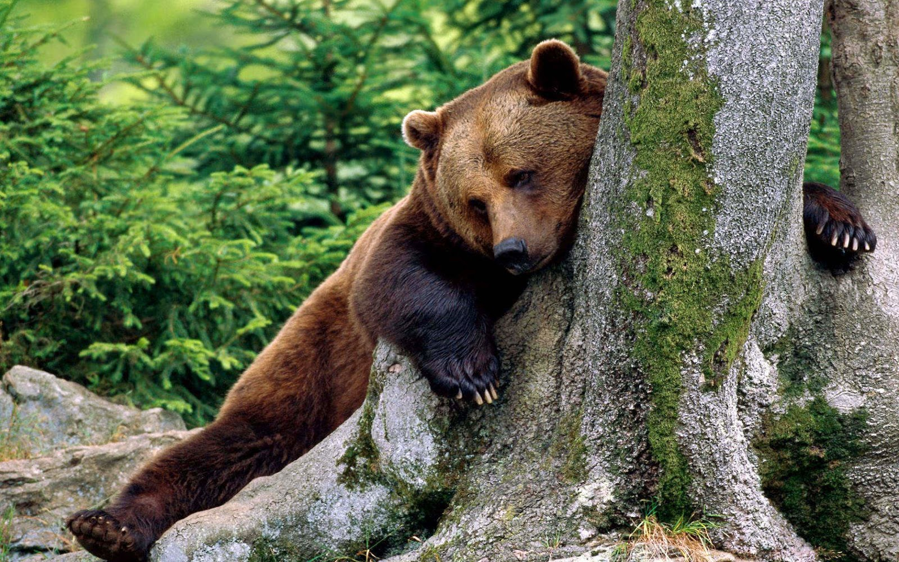
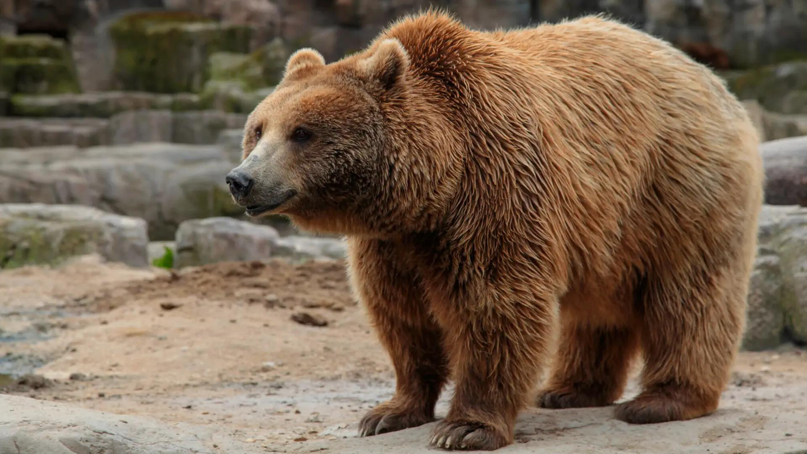
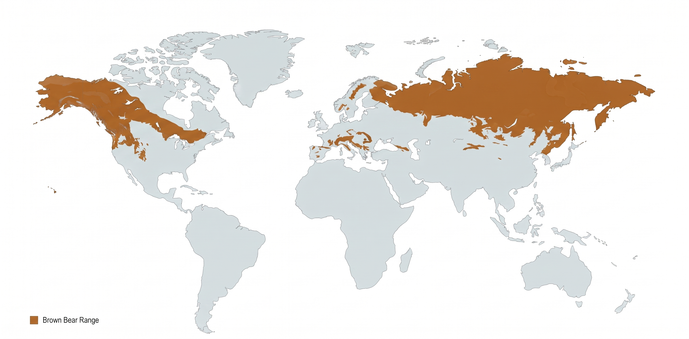

Urso Pardo
Ursus arctos
O urso pardo (Ursus arctos) é um dos maiores e mais impressionantes mamíferos terrestres do planeta, destacando-se pela sua enorme robustez e força física. Conhecido pela sua pelagem densa, que varia entre tons de castanho-claro e quase preto, este magnífico animal simboliza a imponência das grandes zonas selvagens do hemisfério norte. Apesar da sua aparência massiva e aparentemente desajeitada, é uma espécie extremamente adaptável, capaz de se deslocar com grande agilidade e de dominar diferentes tipos de ecossistemas ao longo da sua vasta área de distribuição natural.
Habitat Natural

O urso pardo habita predominantemente zonas florestais extensas e regiões montanhosas remotas que lhe oferecem abrigo seguro e isolamento face à atividade humana. Ao longo do ano, estes animais adaptam o seu território em função da disponibilidade sazonal de alimento, descendo a vales arborizados ou margens de rios durante a época de desova dos salmões, e recolhendo-se a encostas rochosas de altitude elevada ou zonas de tundra à medida que o inverno se aproxima, onde procuram ou escavam as suas covas para o período de dormência invernal.
Dieta
O urso pardo é um animal omnívoro com uma alimentação muito flexível. Cerca de 80% a 90% da sua dieta é composta por matéria vegetal, como frutos, bagas, raízes e bolotas. Para obter proteína, consome peixe — especialmente salmões —, insetos, pequenos mamíferos e carniça. Esta enorme variedade alimentar é essencial para acumular a gordura de que precisa. Essa reserva energética é o que lhe permite sobreviver durante o período de dormência invernal.
Curiosidades
- Apesar do seu tamanho massivo e aspeto pesado, os ursos pardos conseguem correr a velocidades impressionantes de até 50 km/h em curtas distâncias.
- Durante a dormência invernal (hibernação), passam meses sem comer, beber, urinar ou defecar, reciclando os seus próprios resíduos nitrogenados.
- O olfato do urso pardo é excecionalmente apurado, conseguindo detetar comida, carniça ou odores a vários quilómetros de distância.
Os nossos Ursos Pardos
No Zoo Jonçela, dois magníficos ursos pardos – o Barnabé e a Matilda – encantam os visitantes com a sua presença imponente. Com 8 anos de idade, o Barnabé é um macho robusto que mede cerca de 2,2 metros de comprimento e pesa impressionantes 350 kg. A Matilda, com 6 anos, apresenta uma compleição ligeiramente mais ágil, medindo 1,8 metros e pesando cerca de 240 kg. Ambos partilham um recinto espaçoso que simula o seu habitat natural, onde demonstram toda a força, curiosidade e agilidade típicas da sua espécie.